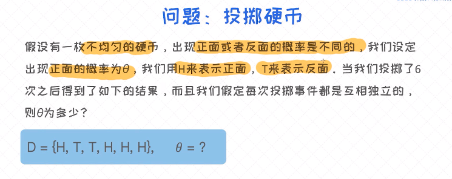
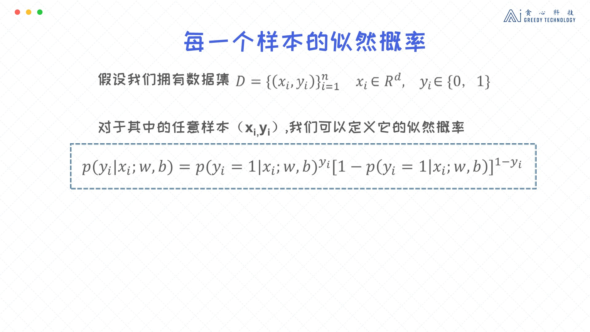

这个目标函数实际上是从上一节所讨论的条件概率获得的。为了更好地理解整个推导过程，首先需要理解什么叫最大似然估计，之后再最大似然的框架下试着推导出逻辑回归的目标函数。
最大似然估计
最大似然估计(Maximum Likelihood Estimation)在机器学习建模中有着举足轻重的作用。它可以指引我们去构造模型的目标函数，以及求出使目标函数最大或者最小的参数值。那具体怎么理解最大似然估计呢？一个比较抽象的解释是：假如有个未知的模型（看作是黑盒子），并且它产生了很多能观测到的样本。这时候，我们便可以通过最大化这些样本的概率反过来求出模型的最优参数，这个过程称之为最大似然估计。
最大似然估计是机器学习最为常用的用来构造目标函数的方法论（框架）。
假设一个未知参数$\theta$，以及已知若干个样本（训练数据），然后通过样本反求$\theta$的方法。
例题：


逻辑回归的似然函数
对于单个样本的条件概率已经定义过了，这个概率也可以看作是似然概率。下一步得把所有的样本全部考虑进来，这时候我们得到的就是所有样本的似然概率。

- 所有样本的似然概率：
$$ P(D \mid w, b) = \prod_{i=1}^{n}{P(y_i \mid x_i ; w, b)}$$
逻辑回归的最大似然概率
得到了逻辑回归的目标函数之后，首先来做一层简化，就是把乘积的形式改造成加法形式。这对于后续的运算有很大的帮助。
$$\hat w_{MLE}, \hat b_{MLE} = argmax_{w,b} \prod_{i=1}^{n}{P(y_i \mid x_i ; w, b)}$$
使用log将累乘问题转化为累加问题（都是单增）
进一步简化